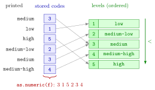

Factor¶
Definition¶
A factor is R's data structure for categorical data, variables that record membership of a category rather than a measurement. It stores
- a vector of integer codes, one per observation, and
- the levels, the list of possible categories in a fixed order, which give each code its label.
A factor has class "factor"; an ordered factor has the classes "ordered" and "factor". It is created with
where x is the source vector (numbers or text), levels lists the values of x that form the categories and fixes their order, labels gives the names to display for them, and ordered = TRUE declares that the order of the levels is meaningful. Values of x that are not in levels become NA.
Interpretation¶
A factor tells R "these values are categories". The department of a worker, a gender, or a seniority level coded 1 to 5 look like text or numbers, but differences and averages of them mean little; what matters is which category each observation belongs to and how many observations fall in each.

The figure shows what a factor holds for six seniority codes. The data are a row of small integers; each one points into the list of levels, and the label of that level is what R prints. Because the factor is ordered, the levels carry a ranking low < medium-low < medium < medium-high < high. The bottom row is the trap: as.numeric() returns the stored codes, not numbers derived from the labels.
There are two kinds of categorical variables. Nominal variables, such as a department, have no natural order; a plain factor fits. Ordinal variables, such as seniority from low to high, have one; with ordered = TRUE the factor keeps it, so comparisons such as sen_f >= "medium" work and tables list the levels in that order. Many functions behave differently for factors: summary() counts observations per level instead of computing a mean of codes, and contingency tables list every level, including empty ones.
Since R 4.0, data.frame() and read.csv() keep text columns as character vectors, so factors have to be created explicitly. Inspect the original codes with unique() first, because a code missing from levels silently becomes NA (missing values).
The classic mistake is converting a factor back to numbers with as.numeric(). For a factor made from the text "10", "20", "5", the levels are sorted as text, "10" < "20" < "5", and as.numeric() returns the codes 1, 2, 3, not 10, 20, 5. Use as.numeric(as.character(f)) (type coercion).
Key Results¶
- A factor is stored as integer codes plus a vector of levels;
levels(f)shows the levels andnlevels(f)their number. - Without
levels,factor()uses the sorted distinct values ofxas levels; text is sorted alphabetically. labelsrenames the levels in the order given bylevels; values outsidelevelsbecomeNA.ordered = TRUEmakes an ordered factor, printed asLevels: low < ... < high, which supports<and>comparisons.summary()andtable()of a factor count observations per level, listing empty levels with count 0.as.numeric(f)returns the codes;as.numeric(as.character(f))recovers numbers written in the labels.
Examples¶
1. An ordered factor from numeric codes. Seniority coded 1 (lowest) to 5 (highest) for six workers.
sen <- c(3, 1, 5, 2, 3, 4)
unique(sen)
#> [1] 3 1 5 2 4
sen_labels <- c("low", "medium-low", "medium", "medium-high", "high")
sen_f <- factor(sen, levels = 1:5, labels = sen_labels, ordered = TRUE)
sen_f
#> [1] medium low high medium-low medium
#> [6] medium-high
#> Levels: low < medium-low < medium < medium-high < high
class(sen_f)
#> [1] "ordered" "factor"
sen_f >= "medium"
#> [1] TRUE FALSE TRUE FALSE TRUE TRUE
The class shows that sen_f is an ordered factor, so the comparison with "medium" uses the ranking of the levels.
2. Counting instead of averaging. summary() treats the codes and the factor differently.
sen <- c(3, 1, 5, 2, 3, 4)
sen_f <- factor(sen, levels = 1:5,
labels = c("low", "medium-low", "medium", "medium-high", "high"),
ordered = TRUE)
summary(sen)
#> Min. 1st Qu. Median Mean 3rd Qu. Max.
#> 1.00 2.25 3.00 3.00 3.75 5.00
summary(sen_f)
#> low medium-low medium medium-high high
#> 1 1 2 1 1
A mean seniority of 3 says little when the codes are labels for categories; the counts per level are what the factor reports.
3. A nominal factor, and values outside the levels. Departments as text.
dept <- c("Sales", "Engineering", "Sales", "Management", "Engineering", "Sales")
dept_f <- factor(dept)
dept_f
#> [1] Sales Engineering Sales Management Engineering
#> [6] Sales
#> Levels: Engineering Management Sales
levels(dept_f)
#> [1] "Engineering" "Management" "Sales"
table(dept_f)
#> dept_f
#> Engineering Management Sales
#> 2 1 3
factor(dept, levels = c("Sales", "Engineering"))
#> [1] Sales Engineering Sales <NA> Engineering
#> [6] Sales
#> Levels: Sales Engineering
Without levels, the levels are the departments in alphabetical order. In the last line "Management" is not among the listed levels and becomes NA.
4. Pitfall: as.numeric() on a factor. The codes come back, not the numbers in the labels.
f <- factor(c("10", "20", "10", "5"))
levels(f)
#> [1] "10" "20" "5"
as.numeric(f)
#> [1] 1 2 1 3
as.numeric(as.character(f))
#> [1] 10 20 10 5
The levels are sorted as text, so "5" comes after "20" and gets code 3. Converting to character first gives the intended numbers 10, 20, 10, 5.
Prerequisites¶
Related Concepts¶
- Contingency Table
- Missing Values
- Summary Statistics in R
- Reading and Writing CSV Files
- Repeating Values with rep()
Sources¶
- Programming for EOR · Week 2
- Lecture 2 script, Part 2 (Working with Data Frames, Built-in Functions, and Factors), section Factor Variables and Contingency Tables; Lecture 1 script, Part 2 (Data Types and Structures), remarks on factors
Aliases: factors, factor(), factor variable, categorical variable in R, ordered factor, levels, labels, stringsAsFactors Keywords: categorical data, levels and labels, ordered = TRUE, integer codes, as.numeric() pitfall
Last updated: 10 November 2026 16:43
FactorContingency TableAtomic Data TypesData FrameType CoercionMissing ValuesSummary Statistics in RReading and Writing CSV FilesRepeating Values with rep()